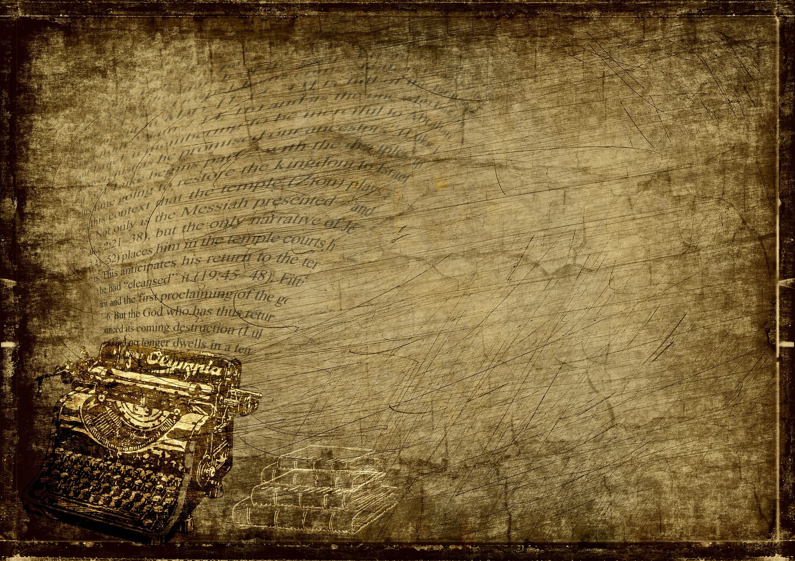

Early printing
Woodblock printing was used in East Asia centuries before printing spread through Europe, allowing texts and images to be reproduced from carved blocks.
This is a Website About Books
Magical worlds, mythical creatures, and epic quests that spark wonder.
Intriguing puzzles, suspenseful twists, and clever clues that keep readers guessing.
Heartfelt stories of love, connection, and emotional journeys.
Printing changed how stories and ideas travelled. Each new press made it possible to produce books faster, share them more widely, and reach more readers.
Woodblock printing was used in East Asia centuries before printing spread through Europe, allowing texts and images to be reproduced from carved blocks.
In 11th-century China, Bi Sheng developed movable type. Around 1450, Johannes Gutenberg’s metal type and press helped make book production more practical in Europe.
As printing spread, books became more available and ideas could travel farther. This helped fuel learning, debate, and growing literacy.
Steam-powered and modern presses made large print runs possible. Digital tools now let stories reach readers both on paper and on screens.

Literacy—the ability to read and write—has grown from a skill held by a few into an essential part of everyday life.
More than 5,000 years ago, people in ancient Mesopotamia developed writing to keep records. Learning to read and write was mostly limited to trained scribes and the powerful.
For centuries, literacy spread through schools, religious institutions, and scholarship, but access to education remained limited for many people.
As printed books became more available, schools and public education grew. Over time, more children and adults gained opportunities to learn to read and write.
Reading and writing remain vital, while modern literacy also includes finding, understanding, and evaluating information in digital media.
Looking for your next read? Start with these much-loved picks from four popular genres.